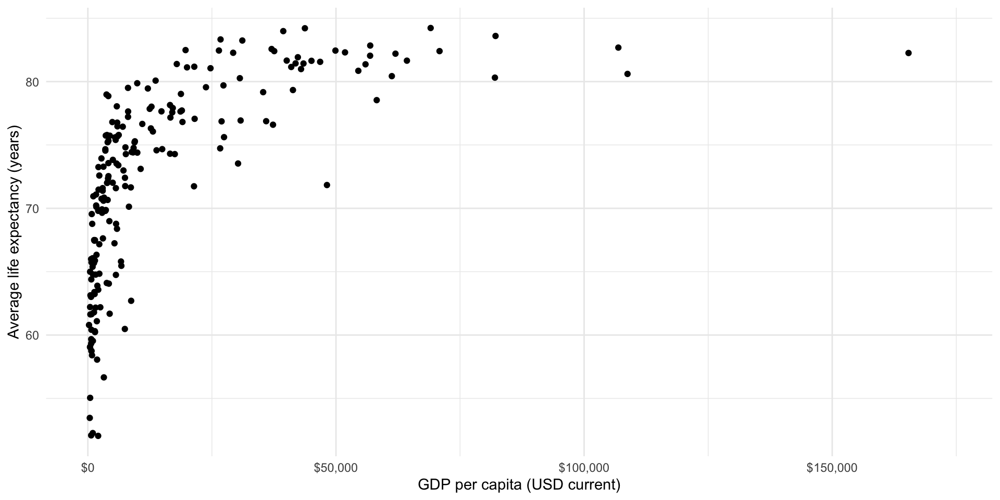

install.packages(c("countrycode", "broom"))Exploring the Relationship Between Two Variables
Set up
To complete this session, you need to load in the following R packages:
Install packages
To install new R packages, run the following (excluding the packages you have already installed):
Bivariate relationships
How do two variables move with one another? When when goes up, does the other go down, up, or not really move at all? How dramatic is this shift?
The type of variables we have determines how we can answer this question. To begin, we will explore the relationship between two continuous variables. Later in the section, we will look at how to explore the relationship between a continuous and categorical variable.
We will return to the relationship between a country’s wealth and health. This question was made popular by the Gapminder project. We were introduced to it during the Transformations section in Session One.
Collecting our data
First, we need to collect our data. Following the Gapminder project, we measure each country’s health by its average life expectancy and its wealth by its GDP per capita. We will use wbstats::wb_data() to pull these data directly from the World Bank.
gapminder_df <- wb_data(
indicator = c("SP.DYN.LE00.IN", "NY.GDP.PCAP.CD"),
start_date = 2016,
end_date = 2016
) |>
# Give these variables more friendly names
rename(
life_exp = SP.DYN.LE00.IN,
gdp_per_cap = NY.GDP.PCAP.CD
) |>
mutate(
# Create a new variable that is GDP per capita logged
log_gdp_per_cap = log(gdp_per_cap),
# Add each country's region to the data set
region = countrycode(country, "country.name", "region")
) |>
relocate(region, .after = country)
gapminder_df# A tibble: 217 × 8
iso2c iso3c country region date gdp_per_cap life_exp log_gdp_per_cap
<chr> <chr> <chr> <chr> <dbl> <dbl> <dbl> <dbl>
1 AW ABW Aruba Latin… 2016 27442. 75.6 10.2
2 AF AFG Afghanistan South… 2016 522. 63.1 6.26
3 AO AGO Angola Sub-S… 2016 1808. 61.1 7.50
4 AL ALB Albania Europ… 2016 4124. 78.9 8.32
5 AD AND Andorra Europ… 2016 40130. NA 10.6
6 AE ARE United Arab Em… Middl… 2016 41326. 79.3 10.6
7 AR ARG Argentina Latin… 2016 12700. 76.3 9.45
8 AM ARM Armenia Europ… 2016 3524. 74.7 8.17
9 AS ASM American Samoa East … 2016 12843. NA 9.46
10 AG ATG Antigua and Ba… Latin… 2016 16558. 78.2 9.71
# ℹ 207 more rowsWhat is the relationship between these two variables?
What is the relationship between a country’s average life expectancy and its GDP per capita? The easiest way to determine this is to visualize these two variables:
ggplot(gapminder_df, aes(x = gdp_per_cap, y = life_exp)) +
geom_point() +
theme_minimal() +
labs(x = "GDP per capita (USD current)",
y = "Average life expectancy (years)") +
scale_x_continuous(labels = label_dollar())
There seems to be a good case that there is a strong relationship between a country’s GDP per capita (wealth) and its average life expectancy (health). It appears that we expect citizens that live in countries that have larger GPD per capita to live longer, on average. But this relationship is not linear (a straight line drawn through them will not summarize this relationship very well).
Because we want to explore linear relationships at this stage of the course, we will look at the logged GDP per capita variable:
ggplot(gapminder_df, aes(x = log_gdp_per_cap, y = life_exp)) +
geom_point() +
theme_minimal() +
labs(x = "Logged GDP per capita",
y = "Average life expectancy (years)") +
scale_x_continuous(labels = label_dollar())
Note
You can transform your data to make it easier to work with. Just remember that you now need to talk in terms of logged GDP per capita instead of GDP per capita.
I can imagine drawing a straight line among these points that summarizes how they vary with each other. It appears that as a country’s logged GDP per capita increases, so too does the average life expectancy of its population. As wealth increases, so too does health. These increases are consistent across each interval increase in wealth.
Well, that was easy! What is the relationship between health and wealth? They increase with each other.
How can we measure the strength of that relationship?
Now we need some way of measuring the strength of the relationship. In other words, what amount of the variation in countries’ average life expectancy is associated with variation in their GDP per capita? We can measure the strength of this association using correlations. The correlation coefficient tells us how closely variables relate to one another. It tells us both the strength and direction of the association.
- Strength: how closely are these values tied to one another. Measured from 0 to |1|, with values closer to 0 indicating a very weak relationship and values closer to |1| indicating a very strong relationship.
Tip
What are those funny looking |s? They represent the absolute value, which is shorthand for the number regardless of its sign. To demonstrate, |1| is the absolute value of 1 and -1.
- Direction: do both \(X\) and \(Y\) change in the same direction? Positive correlations show that when \(X\) increases (decreases), so does \(Y\). Negative correlations show that when \(X\) increases (decreases), \(Y\) decreases (increases). In other words, they move in different directions.
What is the correlation between logged GDP per capita and life expectancy?
cor(gapminder_df$log_gdp_per_cap, gapminder_df$life_exp, use = "complete.obs")[1] 0.8506936As expected, the relationship is positive and strong.
Building a generalizable description of this relationship
We have very quickly gained the skills to determine whether the relationship between two variables is positive, negative, or non-existent. We have also learnt how to describe the strength of that relationship. To that end, we are now able to describe the bivariate relationship between health and wealth as a positive and strong one.
This is useful, but we tend to need a more concrete way of describing the relationship between two variables. For example, what if a policy-maker comes up to you and asks what you think the effect of a $1,000 increase in a country’s GDP per capita will do to its average life expectancy? We can build simple models of this relationship to provide that policy-maker with a prediction of what we might expect to happen, on average. Further, we can use the model to describe the relationship between these two variables in a generalized way. If a new country were to spring into existence, we can use our knowledge of its GDP per capita to determine how long we might expect its citizens to live.
OLS and linear regression
Looking back at our data, we can image a straight line running between each country’s plotted average life expectancy and GDP per capita. Let’s draw that line:
ggplot(gapminder_df, aes(x = log_gdp_per_cap, y = life_exp)) +
geom_point() +
theme_minimal() +
labs(x = "Logged GDP per capita",
y = "Average life expectancy (years)") +
scale_x_continuous(labels = label_dollar())
We can, of course, draw many different lines through these points. Each of us has probably drawn a slightly different line in our heads. Which is the best line?
Ordinary least squares (OLS) regression provides an answer. OLS regression draws the line that minimizes the distance between itself and all of the data points. That line can take many shapes, including a straight line, an S, a frowney face, and smiley face, etc.
Looking at our data above, it appears that a straight line is the best line to draw.
Note
Overfitting involves fitting a model (or drawing a line through our data) that misses the forest for the trees. You can draw all kinds of shapes through those data that perhaps result in a smaller distance between itself and each dot. In fact, if you draw a line that connects all of those dots there will be no difference between your line and the data points.
However, this model will be too focused on the data we have at hand. Our model will have no idea what to do with any new data points we introduce. This is bad! Your aim here is to produce a generalizable model of the relationship between these two variables, not to draw a line that connects this particular constellation of dots.
Okay, so a straight line is the best type of line to draw. But there are still many, many different straight lines that we can draw. Which straight line is best? Remember, OLS regression finds the line that minimizes the distance between itself and all of the data points. Let’s step through this. Look at the graph above.
Draw a line through those dots. Pick a line, any line!
Calculate the distance between each dot and the line.
Sum up the absolute values of those distances. Remember, we just care about the distance, so we don’t need to worry about whether or not the dots are above or below the line.
Repeat steps 1 - 3 many, many, many times.
Pick the line with the smallest sum of distances (the results from step 3).
Phew, this seems tedious. Happily, maths and R are to the rescue. Here is the line that minimizes those distances (all with the addition of one extra line of code).
ggplot(gapminder_df, aes(x = log_gdp_per_cap, y = life_exp)) +
geom_point() +
geom_smooth(method = "lm", se = F) +
theme_minimal() +
labs(x = "Logged GDP per capita",
y = "Average life expectancy (years)") +
scale_x_continuous(labels = label_dollar())
Estimating a linear model in R
How did R do this? To answer this, we will first do some review.
Remember (back to your high school maths classes) the general equation for a line:
\[ y = a + mx \]
Read this as: the value of \(y\) is the sum of some constant, \(a\), and some \(x\) variable that has been transformed by some slope value \(m\).
Remember that the slope constant, \(m\), tells you how much \(y\) changes for every one unit increase in \(x\).
So, if:
\[ y = 10 + 2x \]
Then, when \(x = 20\):
\[ y = 10 + 2*20 = 50 \]
For many values of \(x\):
ggplot(tibble(x = 0:50, y = 10 + 2*x), aes(x = x, y = y)) +
geom_line(colour = "lightgrey", linewidth = 3) +
geom_point() +
theme_minimal()
Well, let’s substitute in our variables of interest. Our \(y\) variable is a country’s average life expectancy and our \(x\) variable is that country’s logged GDP per capita.
\[ life Exp_i = \beta_0 + \beta_1 logGdpPerCap_i + \epsilon \]
Read this as: country \(i\)’s average life expectancy is a function of some constant (\(\beta_0\)) and its logged GDP per capita transformed by some value \(\beta_1\) with some random error (\(\epsilon\)).
Let’s imagine that this relationship is accurately described by the following formula:
\[ life Exp_i = 30 + 4 * logGdpPerCap_i \]
Note
We will get to that pesky error term in just a minute.
Then, our model would predict the following average life expectancy for countries with log GDPs per capita between 0 and 20:
ggplot(
tibble(log_gdp_per_cap = 0:20, life_exp = 30 + 4*log_gdp_per_cap),
aes(x = log_gdp_per_cap, y = life_exp)
) +
geom_line(colour = "lightgrey", linewidth = 3) +
geom_point() +
theme_minimal() +
labs(x = "Logged GDP per capita",
y = "Average life expectancy (years)") +
scale_x_continuous(labels = label_dollar())
A country with a logged GDP per capita of 5 (the equivalent of a GDP per capita of $148.41) has a predicted average life expectancy of 50 years, or \(30 + 4*5\).
A country with a logged GDP per capita of 10 (the equivalent of a GDP per capita of $22,026.47) has a predicted average life expectancy of 70 years, or \(30 + 4*10\).
Does this accurately describe what we see in our data? What is the average life expectancy for countries with roughly $22,000 GDP per capita?
countries_10 <- filter(gapminder_df, gdp_per_cap > 21000 & gdp_per_cap < 23000)
countries_10# A tibble: 3 × 8
iso2c iso3c country region date gdp_per_cap life_exp log_gdp_per_cap
<chr> <chr> <chr> <chr> <dbl> <dbl> <dbl> <dbl>
1 KN KNA St. Kitts and N… Latin… 2016 21388. 71.7 9.97
2 SA SAU Saudi Arabia Middl… 2016 21516. 77.1 9.98
3 SI SVN Slovenia Europ… 2016 21448. 81.2 9.97We predicted 70 years, but our data suggest that these countries have closer to an average of 77 years. Why do we have this difference?
Well, we probably haven’t produced the best model we can (this isn’t the best line!). We just picked those numbers (\(\beta_0\) and \(\beta_1\)) out of thin air. Let’s fit a linear OLS regression and see if we improve our ability to predict what we have seen in the wild.
How do we calculate the constant (\(\beta_0\)) using OLS regression?
Remember, OLS regression simply finds the line that minimizes the distance between itself and all the data points.
Note
The constant that minimizes this distance is the mean of \(Y\) minus \(\beta_1\) times the mean of \(X\). You can prove this using some calculus. We won’t do that here, but feel free to Google it if you are very interested.
So, the constant that best predicts a country’s average life expectancy based on its logged GDP per capita is equal to the average life expectancy across our sample (72.3 years) minus the average logged GDP per capita ($8.80, or $6,652.93 GDP per capita) transformed by \(\beta_1\).
So…
How do we calculate the coefficient \(\beta_1\)?
The regression slope is the correlation coefficient between \(X\) and \(Y\) multiplied by the standard deviation of \(Y\) divided by the standard deviation of \(X\).
Ew… Let’s step through that.
Remember, the correlation coefficient simply measures how \(X\) and \(Y\) change together. Does \(Y\) increase when \(X\) increases? How strong is this relationship?
The standard deviations of \(X\) and \(Y\) just measure how spread out they are.
Bringing these together, we are interested in how much \(X\) and \(Y\) change with each other moderated by how much they change independently of each other.
Formally:
\[ \beta_1 = (\frac{\Sigma(\frac{x_i - \bar{x}}{s_X})(\frac{y_i - \bar{y}}{s_Y})}{n - 1})(\frac{s_Y}{s_X}) = \frac{\Sigma(x_i - \bar{x})(y_i - \bar{y})}{\Sigma(x_i - \bar{x})^2} \]
Happily R does all of this for us.
Let’s fit that model already!
m <- lm(life_exp ~ log_gdp_per_cap, data = gapminder_df)
m
Call:
lm(formula = life_exp ~ log_gdp_per_cap, data = gapminder_df)
Coefficients:
(Intercept) log_gdp_per_cap
32.794 4.521 Okay, so the line of best fit describing the relationship between average life expectancy and logged GDP per capita is:
\[ life Exp_i = 32.9 + 4.5 * logGdpPerCap_i + \epsilon \]
That’s it! We now have a model of the relationship between a country’s average life expectancy and its logged GDP per capita. This model is informed by what we actually observed in the world. It carefully balances our need to accurately describe what we have observed and to develop something that is generalizable.
The above model output is difficult to read. It will not be accepted by any journal or professor. Luckily, we can use modelsummary::modelsummary() to easily generate a professionally formatted table.
modelsummary(
m,
statistic = NULL,
coef_rename = c("log_gdp_per_cap" = "GDP per capita (logged)"),
gof_map = "nobs"
)| (1) | |
|---|---|
| (Intercept) | 32.794 |
| GDP per capita (logged) | 4.521 |
| Num.Obs. | 203 |
Tip
Always make sure to change your variable names from ones that are easily read by a computer (for example, log_gdp_per_cap to one that are easily read by your human reader (for example, GDP per capita (logged)).
Assumptions
Note that OLS regression, particularly linear regression, requires that you make a lot of important assumptions about the relationship between your two variables. For example, we need to assume that the best line to fit is a straight one. We also assume that the best way to generate and describe the relationship across all observations is to fit the line that minimizes the distance between itself and the observed values or dots.
There are other approaches to determining the “best” line. These include maximum likelihood estimation and Bayesian statistics. We won’t discuss these approaches in this class. It’s worth noting here; however, that OLS regression requires a whole bunch of assumptions that may or may not be appropriate to your research question or theory. This class prepares you to grapple with those questions and to appropriately use these tools in your own research.
Prediction and performance
Okay, so we now have a model that describes the relationship between our outcome of interest (health) and our independent variable of interest (wealth). We can use this to predict our outcome of interest for different values of our independent variable. For example, what do we predict to be the average life expectancy of a country with a GDP per capita of $20,000?
broom::tidy(m) makes this model object a lot easier (tidier) to work with.
m_res <- tidy(m)
m_res# A tibble: 2 × 5
term estimate std.error statistic p.value
<chr> <dbl> <dbl> <dbl> <dbl>
1 (Intercept) 32.8 1.75 18.8 4.18e-46
2 log_gdp_per_cap 4.52 0.197 22.9 4.80e-58First, let’s pull out the estimated constant (or intercept or \(\beta_0\)) for our calculations.
Next, let’s pull out the estimated coefficient for (logged) GDP per capita:
Finally, we can plug this in to our model:
\[ life Exp_i = \beta_0 + \beta_1 logGdpPerCap_i \]
life_exp_20000 <- beta_0 + beta_1 * log(20000)
life_exp_20000[1] 77.56355On average, countries with GDPs per capita of $20,000 are predicted to have an average life expectancy of 78 years.
Let’s take a look back at our data. Remember, these data describe what the World Bank actually observed for each country in 2016. How close is our predicted value to our observed values?
countries_10# A tibble: 3 × 8
iso2c iso3c country region date gdp_per_cap life_exp log_gdp_per_cap
<chr> <chr> <chr> <chr> <dbl> <dbl> <dbl> <dbl>
1 KN KNA St. Kitts and N… Latin… 2016 21388. 71.7 9.97
2 SA SAU Saudi Arabia Middl… 2016 21516. 77.1 9.98
3 SI SVN Slovenia Europ… 2016 21448. 81.2 9.97As above, our data suggest that these countries have closer to an average of 77 years. Although our model predicted an average life expectancy closer to this than our guess above (which predicted 70 years), we still have a gap. Why?
Our model is an attempt to formalize our understanding of the general relationship between a country’s wealth and health. Plotting our model against the observed values we used to generate it illustrates this point well:
ggplot(gapminder_df, aes(x = log_gdp_per_cap, y = life_exp)) +
geom_point() +
geom_vline(xintercept = log(20000)) +
geom_hline(yintercept = life_exp_20000) +
geom_smooth(method = "lm", se = F) +
theme_minimal() +
labs(x = "Logged GDP per capita",
y = "Average life expectancy (years)") +
scale_x_continuous(labels = label_dollar())The world is a complicated and messy place. There are many countries that have a GDP per capita of around $20,000 (those dots sitting around the vertical black line). They have a wide range of average life expectancy: look at their various placement along that vertical line. Some are higher than others.
Also, there are several countries with a wide range of logged GDP per capita that have an average life expectancy of 78 years (those sitting at or around the horizontal black line). These have a wide range of logged GDP per capita: some are further to the left than others.
Our model is our best attempt at accounting for that diversity whilst still producing a useful summary of the relationship between health and wealth for those countries and all other countries with all observed values of GDP per capita.
A bit of noise (or error) is expected. How much error is okay? This is a complicated question that has contested answers. Let’s start with actually measuring that error. Then we can chat about whether or not it’s small enough to allow us to be confident in our model.
Measuring error in our model
Returning to our question above, how close are our predicted values to our observed values? For example, how far from the observed average life expectancy of countries with a GDP per capita of or close to $20,000 is 78 years?
Start by working out the average life expectancy predicted by our model for the logged GDP per capita of all of our countries. We can then compare this to the average life expectancy actually observed in all these countries. We can predict values from a model using broom::augment():
augment(m)# A tibble: 203 × 9
.rownames life_exp log_gdp_per_cap .fitted .resid .hat .sigma .cooksd
<chr> <dbl> <dbl> <dbl> <dbl> <dbl> <dbl> <dbl>
1 1 75.6 10.2 79.0 -3.38 0.00999 4.10 0.00347
2 2 63.1 6.26 61.1 2.05 0.0192 4.10 0.00252
3 3 61.1 7.50 66.7 -5.61 0.00850 4.08 0.00812
4 4 78.9 8.32 70.4 8.43 0.00533 4.06 0.0114
5 6 79.3 10.6 80.8 -1.51 0.0132 4.10 0.000921
6 7 76.3 9.45 75.5 0.797 0.00609 4.10 0.000117
7 8 74.7 8.17 69.7 4.95 0.00569 4.09 0.00421
8 10 78.2 9.71 76.7 1.44 0.00712 4.10 0.000448
9 11 82.4 10.8 81.7 0.753 0.0149 4.10 0.000260
10 12 81.6 10.7 81.2 0.406 0.0140 4.10 0.0000706
# ℹ 193 more rows
# ℹ 1 more variable: .std.resid <dbl>This function is simply fitting our model (\(life Exp_i = 32.9 + 4.5 * logGdpPerCap_i\)) to each country’s logged GDP per capita. You can confirm this by running the model yourself:
gapminder_df |>
transmute(country, log_gdp_per_cap, .fitted = beta_0 + beta_1*log_gdp_per_cap)# A tibble: 217 × 3
country log_gdp_per_cap .fitted
<chr> <dbl> <dbl>
1 Aruba 10.2 79.0
2 Afghanistan 6.26 61.1
3 Angola 7.50 66.7
4 Albania 8.32 70.4
5 Andorra 10.6 80.7
6 United Arab Emirates 10.6 80.8
7 Argentina 9.45 75.5
8 Armenia 8.17 69.7
9 American Samoa 9.46 75.6
10 Antigua and Barbuda 9.71 76.7
# ℹ 207 more rowsHow did the model do? What is the difference between what it predicted and the country’s observed average life expectancy? Compare .fitted (the predicted average life expectancy) to life_exp (the actual observed average life expectancy).
# A tibble: 203 × 3
life_exp .fitted diff
<dbl> <dbl> <dbl>
1 75.6 79.0 -3.38
2 63.1 61.1 2.05
3 61.1 66.7 -5.61
4 78.9 70.4 8.43
5 79.3 80.8 -1.51
6 76.3 75.5 0.797
7 74.7 69.7 4.95
8 78.2 76.7 1.44
9 82.4 81.7 0.753
10 81.6 81.2 0.406
# ℹ 193 more rowsNote that broom::augment() already did this calculation and stored it in the .resid variable. The formal term for the difference between the predicted and observed values is the residual.
# A tibble: 203 × 3
life_exp .fitted .resid
<dbl> <dbl> <dbl>
1 75.6 79.0 -3.38
2 63.1 61.1 2.05
3 61.1 66.7 -5.61
4 78.9 70.4 8.43
5 79.3 80.8 -1.51
6 76.3 75.5 0.797
7 74.7 69.7 4.95
8 78.2 76.7 1.44
9 82.4 81.7 0.753
10 81.6 81.2 0.406
# ℹ 193 more rowsOkay, so there are some differences. Let’s look at those differences a bit more closely:
ggplot(augment(m), aes(x = .resid)) +
geom_density() +
geom_vline(xintercept = 0) +
theme_minimal()If our model perfectly predicted each country’s life expectancy, we would see no difference between the predicted and observed values. There would just be a very tall straight line at 0 on the graph above.
Our model hasn’t predicted life expectancy perfectly. Whilst most predictions are within a couple of years of the country’s true life expectancy, there are some that are very different (up to 10 or 15 years!). Where the model has got it wrong, it has tended to overestimate life expectancy (note that the peak of the density curve sits above 0).
Can you see for which points these large differences exist?
ggplot(gapminder_df, aes(x = log_gdp_per_cap, y = life_exp)) +
geom_point() +
geom_smooth(method = "lm", se = F) +
theme_minimal() +
labs(x = "Logged GDP per capita",
y = "Average life expectancy (years)") +
scale_x_continuous(labels = label_dollar())What is causing these differences? A lot of your work as a political scientist is trying to answer this very question!
(Random) error
The world is a messy and complicated place. Things often vary in random ways. That’s okay! It means that your observational data are going to move in funny and random ways. That’s okay too! As long as your model includes all of the systematic drivers of the thing you are interested in measuring (such as average life expectancy), we can accept a bit of random error.
In fact, we have already accounted for this. Remember that error term:
\[ life Exp_x = \beta_0 + \beta_1 logGdpPerCap_x + \epsilon \]
We run into issues when there are non-random things bundled up into the difference between what our model predicts and what we actually observe. We will discuss this more in later sessions.
A model-wide value for error
We often want to understand how the model has performed as a whole, rather than how well it predicts each individual observed data point. There are many different ways we can do this.
Sum of squared residuals (deviance)
The sum of squared residuals measures the total error in our model. Formally:
\[ \Sigma(y_i - \hat{y_i})^2 \]
Where \(y_i\) is each observed value (the country’s actual average life expectancy) and \(\hat{y_i}\) is each predicted value (the model’s estimate of country’s average life expectancy). We just add those all up to get a single measure of the model’s overall performance.
Remember that we tend to square things when we don’t care about their direction. We don’t care that the predicted value is less or more than the observed value, just about how far they are from each other.
We can do this ourselves:
Or we can use broom::glance():
glance(m)# A tibble: 1 × 12
r.squared adj.r.squared sigma statistic p.value df logLik AIC BIC
<dbl> <dbl> <dbl> <dbl> <dbl> <dbl> <dbl> <dbl> <dbl>
1 0.724 0.722 4.09 526. 4.80e-58 1 -573. 1152. 1162.
# ℹ 3 more variables: deviance <dbl>, df.residual <int>, nobs <int>
Tip
Where broom::tidy() gives us information about the coefficients of our model, broom::glance() gives us information on the model overall.
This is useful, but it is influenced by the units by which we measure our variables. If one model includes something like GDP which is includes values in the billions, we will get a very large sum of squared residuals. If another model includes something like percentage of as state’s citizens who will vote for Donald Trump, we will get a relatively small sum of squared residuals. What if we want to compare model performance in a meaningful way?
\(R^2\)
The \(R^2\) value measures the amount of variation in the dependent variable that is explained by the independent variable. In our example, it measures how much the changes in countries’ average life expectancy is explained by the changes in their (logged) GDP per capita.
\[ R^2 = 1 - \frac{Unexplained\ variation}{Total\ variation} \]
The \(R^2\) value is useful because it does not reflect the units of measurement used in our variables. Therefore, we can compare how well different models perform.
The \(R^2\) value has three component parts.
Total Sum of Squares (TSS)
TSS measures the squared sum of the differences between all predicted values of the dependent variable and the mean of the dependent variable.
Explained Sum of Squares (ESS)
ESS measures the sum of the squares of the deviations of the predicted values from the mean value of the dependent variable.
Residual Sum of Squares (RSS)
RSS measures the difference between the TSS and ESS. In other words, the error not explained by the model.
Formally, the \(R^2\) value is:
\[ R^2 = 1 - \frac{RSS}{TSS} = 1 - \frac{\Sigma(y_i - \hat{y_i})^2}{\Sigma(y_i - \hat{y})^2} \]
Or:
\[ R^2 = \frac{ESS}{TSS} = \frac{\Sigma(\hat{y}_i - \bar{y})^2}{\Sigma(y_i - \bar{y})^2} \]
Our model’s \(R^2\) can be accessed using broom::glance():
An \(R^2\) of one means that all changes in the dependent variable are completely explained by changes in the independent variable. Here, it would mean that all changes to a country’s average life expectancy are explained through changes to the country’s logged GDP per capita.
According to our model, 72.4% of changes in a country’s average life expectancy are explained through changes to the country’s logged GDP per capita.